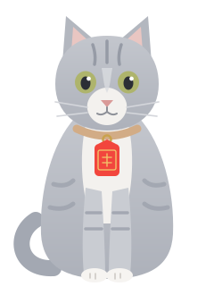
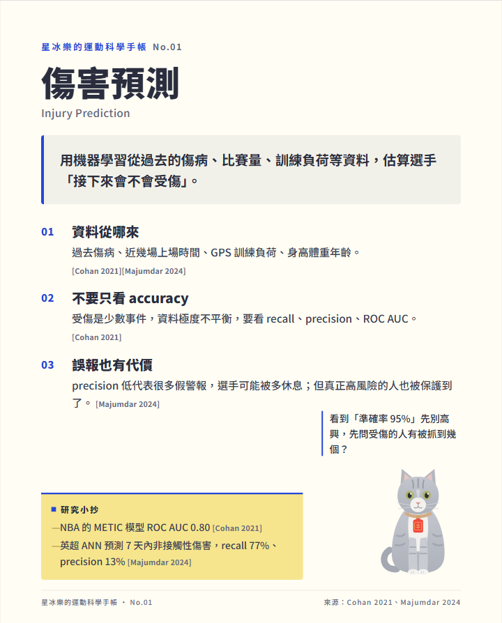
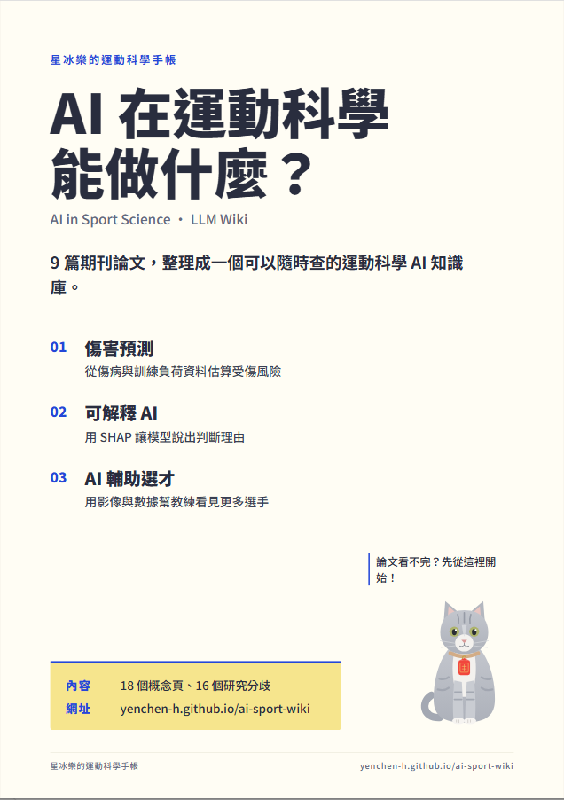
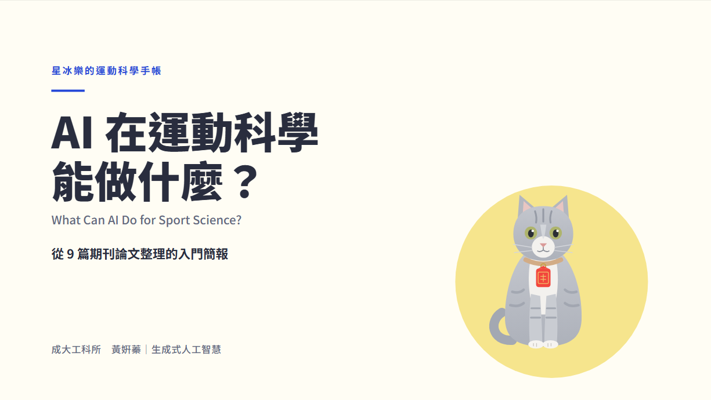
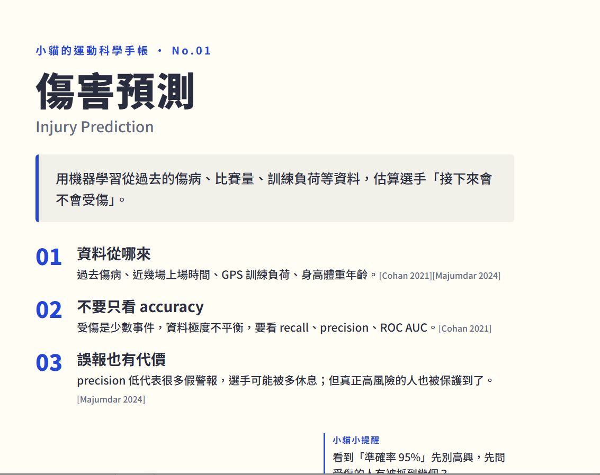

用 Claude 專案建立的風格 Agent：給它「用途＋內容」，就產出同一系列的圖卡、海報和封面。



米白底 深灰藍字
淡黃區塊 寶藍點綴
扁平設計，不用陰影、漸層、emoji、紙膠帶；圓角 6px，只用直線。
星冰樂：銀灰毛、白胸口、黃綠眼、紅色御守，正常比例，不畫 Q 版。
全部靠左對齊；系列名 → 大標 → 副標 → 內容 → 星冰樂 → 頁尾；留白 30% 以上。

v1只用文字描述風格，結果走樣了：
v2改成模板制：知識庫放三份 HTML 模板，規定只能替換 {{ }} 內的文字，系列名一個字都不能改，並加上自動縮放。重新生成後三件作品就一致了。